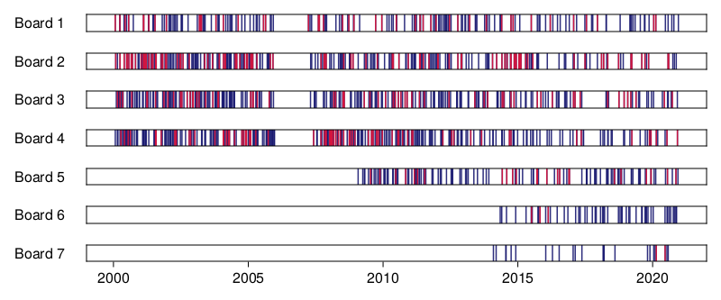

using Model
using Dictionaries, SplitApplyCombine
using DataFramesMeta, Dates
using CairoMakie
using StatsBaseComposition Effects in Judicial Panels
decisions = Model.loaddata("../data/processed/json_augmented");What do we really want to know?
- are there composition effects which go beyond the ‘sum of parts’?
- Do boards’ decisions change systematically when a new judge enters (an old judge exits)?
What we need to know before
- How frequent are changes to the board composition?
decisions_from_board(decisions, board) = filter(d -> id(senate(d)) == board, decisions)decisions_from_board (generic function with 1 method)compositions(ds; num_judges=5) = map(js -> Set(label.(first(js, num_judges))), judges.(ds))compositions (generic function with 1 method)function find_composition_changes(decisions; num_judges=5)
changes = Date[]
getjudgeids(d) = Set(id.(first(judges(d), num_judges)))
current_comp = getjudgeids(first(decisions))
for d in decisions[2:end]
js = getjudgeids(d)
if js != current_comp
push!(changes, date(d))
current_comp = js
end
end
changes
endfind_composition_changes (generic function with 1 method)function plot_dates!(ax, ds; kwargs...)
x = datetime2rata.(ds)
xticks=(datetime2rata.(Date.(2000:5:2020)), string.(2000:5:2020))
vlines!(ax, x; color=(:midnightblue, :0.9), kwargs...)
ax.xticks = xticks
hideydecorations!(ax)
return
end
function plot_dates(ds)
fig = Figure(resolution=(800, 100))
ax = Axis(fig[1,1])
plot_dates!(ax, ds)
fig
endplot_dates (generic function with 1 method)function plot_boards(decisions; boards=1:7, plotchanges=false, num_judges=5)
fig = Figure()
for (i, board) in enumerate(boards)
Label(fig[i, 1], "Board $board")
ax = Axis(fig[i, 2]; xgridvisible=false)
ds = decisions_from_board(decisions, board)
plot_dates!(ax, date.(ds))
if plotchanges
cs = find_composition_changes(ds; num_judges)
plot_dates!(ax, cs; color=(:crimson, 0.9))
end
xlims!(ax, datetime2rata.((Date(1999), Date(2022))))
i != length(boards) && hidexdecorations!(ax)
end
resize_to_layout!(fig)
fig
endplot_boards (generic function with 1 method)plot_boards(decisions; plotchanges=true, num_judges=1)
let board = 3
ds = decisions_from_board(decisions, board)
println("Board $board ($(length(ds)) cases)")
foreach(1:5) do k
c = compositions(ds; num_judges=k) |> unique
println(" Number of unique $k-compositions: $(length(c))")
end
endBoard 3 (264 cases)
Number of unique 1-compositions: 12
Number of unique 2-compositions: 68
Number of unique 3-compositions: 110
Number of unique 4-compositions: 145
Number of unique 5-compositions: 155let ds = decisions
c = compositions(ds; num_judges=1)
sort!(StatsBase.countmap(c) |> Dictionary; rev=true)
end41-element Dictionary{Set{String}, Int64}
Set(["Schramm"]) │ 93
Set(["Sredl"]) │ 92
Set(["Voit"]) │ 86
Set(["Engels"]) │ 85
Set(["Meinhardt"]) │ 74
Set(["Hellebrand"]) │ 70
Set(["Schwendy"]) │ 69
Set(["Rauch"]) │ 69
Set(["Schmidt"]) │ 67
Set(["Gutermuth"]) │ 59
Set(["Winkler"]) │ 54
Set(["Friehe"]) │ 50
Set(["Schermer"]) │ 46
⋮ │ ⋮
Set(["Kätker"]) │ 5
Set(["Brandt"]) │ 5
Set(["Sedemund-Treiber"]) │ 4
Set(["Mittenberger-Huber"]) │ 4
Set(["Kortbein"]) │ 3
Set(["Schwarz"]) │ 2
Set(["Fuchs-Wissemann"]) │ 2
Set(["Baumgärtner"]) │ 2
Set(["Hermann"]) │ 1
Set(["Eisenrauch"]) │ 1
Set(["Schwarz-Angele"]) │ 1
Set(["Sandkämper"]) │ 1